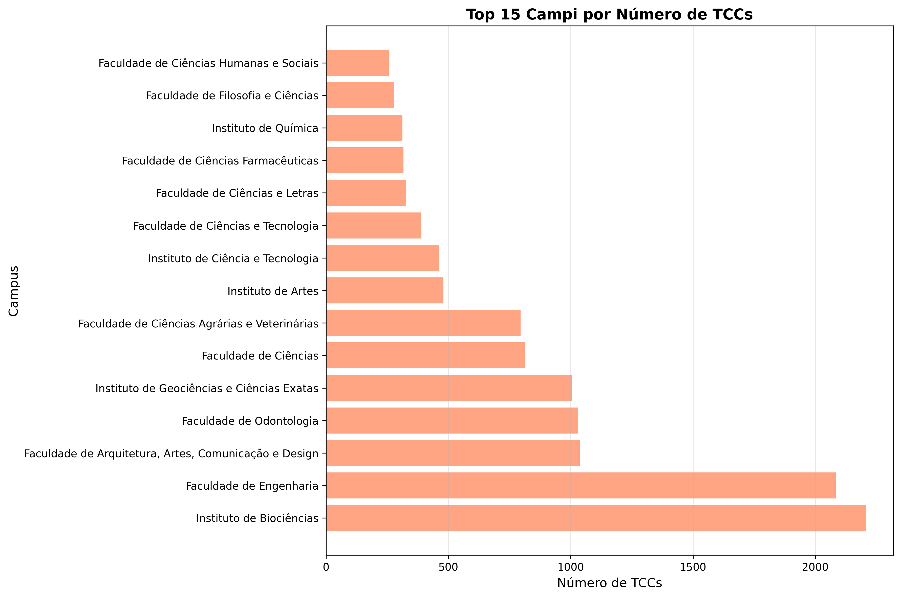
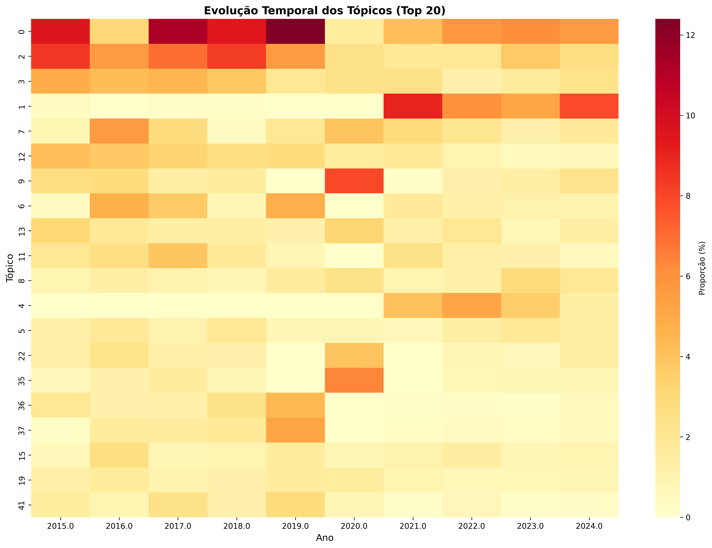
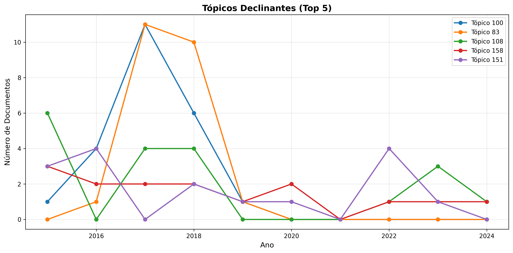
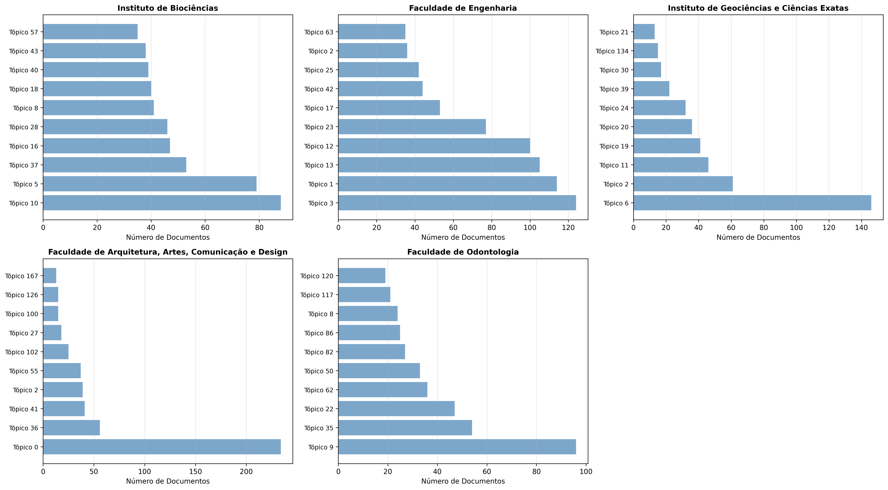

Análise automatizada de conteúdo de Bardin aplicada à produção acadêmica da Unesp
Introdução
A análise sistemática da produção acadêmica institucional representa um desafio fundamental para a compreensão das tendências de pesquisa, áreas de interesse e evolução do conhecimento em universidades. No contexto da Universidade Estadual Paulista (Unesp), com múltiplos campi distribuídos pelo estado de São Paulo, essa tarefa torna-se ainda mais complexa devido ao volume e diversidade da produção científica.
O presente trabalho aborda a questão central: “O que os alunos de graduação da Unesp produziram nos últimos 10 anos?”. Esta pergunta desdobra-se em questões específicas sobre preferências disciplinares, evolução temporal de tópicos de pesquisa, distribuição geográfica de áreas de interesse e padrões emergentes na produção acadêmica.
Para responder a essas questões, desenvolveu-se um sistema computacional que integra a metodologia clássica de Análise de Conteúdo proposta por Laurence Bardin1 com técnicas atuais de aprendizado profundo e processamento de linguagem natural (PLN). Esta abordagem híbrida permite manter o rigor metodológico da análise qualitativa tradicional, ao mesmo tempo em que viabiliza o processamento de grandes volumes de dados através de algoritmos automatizados.
O objetivo principal deste trabalho é desenvolver e validar o sistema aplicado à produção acadêmica da Unesp, especificamente os trabalhos de conclusão de curso (TCCs) produzidos entre 2015 e 2024.
De maneira específica, os autores buscam (a) implementar computacionalmente as três fases da metodologia de Bardin através de técnicas de PLN e aprendizado de máquina, (b) identificar e caracterizar os principais tópicos de pesquisa presentes nos TCCs através de modelagem automática de tópicos, (c) analisar a evolução temporal dos tópicos identificados, detectando tendências emergentes e declinantes, e (d) mapear a distribuição geográfica e disciplinar dos tópicos entre os diferentes campi e cursos.
Revisão de Literatura
Análise de Conteúdo de Bardin
A Análise de Conteúdo, conforme sistematizada por Laurence Bardin1, constitui-se como “um conjunto de técnicas de análise das comunicações visando obter por procedimentos sistemáticos e objetivos de descrição do conteúdo das mensagens indicadores (quantitativos ou não) que permitam a inferência de conhecimentos relativos às condições de produção/recepção (variáveis inferidas) dessas mensagens”.
A metodologia estrutura-se em três fases fundamentais:
-
Pré-análise: Organização do material e sistematização das ideias iniciais. Inclui a leitura flutuante, escolha dos documentos, formulação de hipóteses e objetivos, e elaboração de indicadores.
-
Exploração do material: Aplicação sistemática das decisões tomadas na pré-análise. Consiste essencialmente em operações de codificação, decomposição ou enumeração, em função de regras previamente formuladas.
-
Tratamento dos resultados e interpretação: Os resultados brutos são tratados de maneira a serem significativos e válidos. Operações estatísticas simples ou complexas permitem estabelecer quadros de resultados, diagramas, figuras e modelos.
Topic Modeling e BERTopic
Topic modeling refere-se a uma família de algoritmos de aprendizado de máquina não supervisionado destinados a descobrir estruturas temáticas latentes em grandes coleções de documentos2. Tradicionalmente, métodos como Latent Dirichlet Allocation (LDA) dominam o campo, modelando documentos como misturas probabilísticas de tópicos.
BERTopic, introduzido por Grootendorst3, representa uma evolução significativa nessa área, combinando embeddings de linguagem pré-treinados com técnicas de clustering para criar representações de tópicos mais coerentes e interpretáveis. O algoritmo segue uma pipeline modular:
-
Geração de Embeddings: Utilização de modelos de linguagem pré-treinados (BERT, Sentence-BERT) para criar representações vetoriais densas dos documentos.
-
Redução Dimensional: Aplicação de Uniform Manifold Approximation and Projection (UMAP) para reduzir a dimensionalidade dos embeddings, preservando estruturas locais e globais4.
-
Clustering: Uso de Hierarchical Density-Based Spatial Clustering of Applications with Noise (HDBSCAN) para identificar clusters de documentos semanticamente similares5.
-
Representação de Tópicos: Extração de palavras representativas através de class-based TF-IDF (c-TF-IDF), uma variação do TF-IDF tradicional6 adaptada para contextos de clustering3.
Processamento de Linguagem Natural em Português
O processamento de textos em português apresenta desafios específicos relacionados à morfologia rica da língua7, incluindo conjugações verbais complexas, concordância de gênero e número, e uso extensivo de clíticos. Para este trabalho, utilizou-se o modelo spaCy pt_core_news_lg, treinado especificamente para português brasileiro, oferecendo capacidades de tokenização, lematização, análise morfossintática e reconhecimento de entidades nomeadas8.
Fundamentos Matemáticos dos Algoritmos
Processamento Linguístico com spaCy
O spaCy implementa um pipeline de processamento linguístico baseado em redes neurais convolucionais (CNN). As principais operações realizadas são:
-
Tokenização: Segmentação do texto em tokens utilizando regras linguísticas específicas do português e padrões de expressões regulares. Cada documento \(D\) é transformado em uma sequência de tokens \(T = {t_1, t_2, …, t_n}\).
-
Lematização: Redução de cada token à sua forma canônica (lema) através de um modelo estatístico treinado. Para cada token \(t_i\), a lematização mapeia \(\text{lemma}(t_i) = l_i\), onde \(l_i\) representa a forma base da palavra, removendo flexões verbais, plurais e outras variações morfológicas.
-
Part-of-Speech (POS) Tagging: O spaCy utiliza uma rede neural convolucional para classificar cada token em categorias gramaticais. A probabilidade de um token \(t_i\) pertencer à classe POS \(c_j\) é calculada através de \(P(c_j \mid t_i) = \text{softmax}(\mathbf{W} \cdot \text{CNN}(t_i) + \mathbf{b})_j\), onde \(\mathbf{W}\) são os pesos da camada de classificação, \(\text{CNN}(t_i)\) é a representação vetorial do token, e \(\mathbf{b}\) é o vetor de bias.
Term Frequency-Inverse Document Frequency (TF-IDF)
O TF-IDF é uma medida estatística que avalia a importância de um termo em um documento dentro de um corpus. É calculado como o produto de duas componentes:
Frequência do Termo (TF):
\[ \text{TF}(t, d) = \frac{f_{t,d}}{\sum_{t’ \in d} f_{t’,d}} \]
onde \(f_{t,d}\) é a frequência bruta do termo \(t\) no documento \(d\).
Frequência Inversa de Documento (IDF):
\[ \text{IDF}(t, D) = \log\left(\frac{N}{\mid{d \in D : t \in d}\mid}\right) \]
onde \(N\) é o número total de documentos e \(\mid{d \in D : t \in d}\mid\) é o número de documentos contendo o termo \(t\).
O TF-IDF final, é, portanto, obtido com \(\text{TF-IDF}(t, d, D) = \text{TF}(t, d) \times \text{IDF}(t, D)\). Esta métrica penaliza termos muito frequentes (como stopwords) e valoriza termos distintivos de documentos específicos.
Embeddings Semânticos (Sentence-Transformers)
O modelo paraphrase-multilingual-mpnet-base-v2 utiliza uma arquitetura transformer9 com mean pooling para gerar representações vetoriais densas de sentenças. Para uma sequência de entrada \(\mathbf{X} = [\mathbf{x}_1, …, \mathbf{x}_n]\), o mecanismo de atenção multi-cabeças calcula:
\[ \text{Attention}(\mathbf{Q}, \mathbf{K}, \mathbf{V}) = \text{softmax}\left(\frac{\mathbf{Q}\mathbf{K}^T}{\sqrt{d_k}}\right)\mathbf{V} \]
onde \(\mathbf{Q}\) (queries), \(\mathbf{K}\) (keys) e \(\mathbf{V}\) (values) são projeções lineares da entrada, e \(d_k\) é a dimensão das keys.
A representação final do documento é obtida pela média das representações de todos os tokens,
\[ \mathbf{e}_d = \frac{1}{n}\sum_{i=1}^{n} \mathbf{h}_i \]
onde \(\mathbf{h}_i\) é a representação contextualizada do token \(i\) na última camada do transformer, e \(\mathbf{e}_d \in \mathbb{R}^{384}\) é o embedding final do documento.
Uniform Manifold Approximation and Projection (UMAP)
O UMAP reduz a dimensionalidade dos embeddings preservando estruturas topológicas locais e globais. O algoritmo baseia-se na teoria de variedades Riemannianas e topologia algébrica4. Para cada ponto \(x_i\), define-se uma distância normalizada aos \(k\) vizinhos mais próximos,
\[ d_i(x_i, x_j) = \max\left(0, \frac{\Vert x_i - x_j \Vert - \rho_i}{\sigma_i}\right) \]
onde \(\rho_i\) é a distância ao vizinho mais próximo e \(\sigma_i\) é um fator de normalização.
A probabilidade de conexão entre \(x_i\) e \(x_j\) no espaço de alta dimensão é
\[ w_{ij} = \exp(-d_i(x_i, x_j)) \]
O UMAP minimiza a divergência de entropia cruzada entre os grafos de alta e baixa dimensão via
\[ \mathcal{L} = \sum_{i,j} w_{ij} \log\left(\frac{w_{ij}}{v_{ij}}\right) + (1-w_{ij})\log\left(\frac{1-w_{ij}}{1-v_{ij}}\right) \]
onde \(v_{ij}\) são os pesos no espaço de baixa dimensão, calculados analogamente.
Hierarchical DBSCAN (HDBSCAN)
O HDBSCAN é um algoritmo de clustering hierárquico baseado em densidade que identifica clusters de diferentes densidades e tamanhos5. Para dois pontos \(x_i\) e \(x_j\), a distância de alcance mútua é definida como
\[ d_{\text{mreach}-k}(x_i, x_j) = \max \left\{ \text{core}_k(x_i), \text{core}_k(x_j), d(x_i, x_j) \right\} \]
onde \(\text{core}_k(x_i)\) é a distância ao \(k\)-ésimo vizinho mais próximo de \(x_i\) (com \(k\) = min_cluster_size).
O algoritmo constrói uma árvore de spanning mínima (MST) sobre o grafo completo com pesos \(d_{\text{mreach}-k}\). A MST minimiza
\[ \sum_{(i,j) \in \text{MST}} d_{\text{mreach}-k}(x_i, x_j) \]
Em seguida, remove-se iterativamente arestas da MST em ordem decrescente de peso, criando uma hierarquia de clusters. Para cada nível \(\epsilon\), um cluster é estável se sua “persistência” (número de pontos multiplicado pelo tempo de vida) é alta.
O método Excess of Mass (EOM) seleciona clusters que maximizam:
\[ \text{Estabilidade}(C) = \sum_{x_i \in C} (\lambda_{x_i} - \lambda_{\text{birth}}) \]
onde \(\lambda = 1/\epsilon\) é o parâmetro de densidade inversa, e \(\lambda_{\text{birth}}\) é a densidade quando o cluster nasce na hierarquia.
Pontos que não pertencem a nenhum cluster estável são classificados como outliers.
Class-based TF-IDF (c-TF-IDF)
O BERTopic utiliza uma variação do TF-IDF tradicional adaptada para contexto de clusters. Enquanto o TF-IDF tradicional opera em nível de documento, o c-TF-IDF trata cada cluster como um único “documento”:
\[ W_{t,c} = tf_{t,c} \times \log\left(\frac{m}{df_t}\right) \]
onde \(W_{t,c}\) é peso do termo \(t\) no cluster \(c\), \(tf_{t,c}\) é a soma das frequências do termo em todos os documentos do cluster, \(m\) é o número total de clusters, e \(df_t\) é número de clusters contendo o termo \(t\).
Esta abordagem permite extrair termos que são distintivos de cada cluster, gerando representações interpretáveis dos tópicos identificados.
Metodologia
Arquitetura do Sistema
O sistema desenvolvido implementa uma arquitetura modular baseada em pipeline, organizada em cinco estágios distintos que correspondem às fases da metodologia de Bardin adaptadas ao contexto computacional:
stateDiagram-v2
[*] --> Coleta
Coleta: Coleta de dados
state Coleta {
[*] --> CriaDB
CriaDB --> Pagina
Pagina --> ExtraiMeta
ExtraiMeta --> Normaliza
Normaliza --> SalvaDB
Normaliza --> SalvaJSON
SalvaDB --> [*]
SalvaJSON --> [*]
CriaDB: Cria database vazio
Pagina: Requisição HTTP com paginação e retry
ExtraiMeta: Extrai metadados JSON da API
Normaliza: Normaliza valores
SalvaDB: Salva metadados no database relacional
SalvaJSON: Salva backup de metadados em JSON
}
Coleta --> Preprocessamento
Preprocessamento: Pré-processamento
state Preprocessamento {
[*] --> CarregaDB
CarregaDB --> DetectaLingua
DetectaLingua --> FiltraPortugues
FiltraPortugues --> LimpezaTexto
LimpezaTexto --> Vetorizacao
Vetorizacao --> SalvaCorpus
SalvaCorpus --> [*]
CarregaDB: Carrega TCCs do database
DetectaLingua: Detecta idioma com confiança
FiltraPortugues: Filtra apenas português
LimpezaTexto: Tokenização + Lematização + Remoção de stopwords
Vetorizacao: Cria matriz TF-IDF (unigramas, bigramas, trigramas)
SalvaCorpus: Salva corpus processado + vetorizador
}
Preprocessamento --> PreAnalise
PreAnalise: FASE 1 BARDIN - Pré-análise
state PreAnalise {
[*] --> CarregaCorpus1
CarregaCorpus1 --> EstatisticasDesc
EstatisticasDesc --> AnaliseTemp
EstatisticasDesc --> AnaliseGeo
EstatisticasDesc --> AnaliseLex
AnaliseTemp --> GeraViz1
AnaliseGeo --> GeraViz1
AnaliseLex --> GeraViz1
GeraViz1 --> GeraRelat1
GeraRelat1 --> [*]
CarregaCorpus1: Carrega corpus processado
EstatisticasDesc: Calcula estatísticas descritivas
AnaliseTemp: Distribuição temporal por ano/curso
AnaliseGeo: Distribuição por campus e curso
AnaliseLex: Frequência de palavras e vocabulário
GeraViz1: Gera visualizações
GeraRelat1: Gera relatório textual de pré-análise
}
PreAnalise --> TopicModeling
TopicModeling: FASE 2 BARDIN - Exploração do Material
state TopicModeling {
[*] --> CarregaCorpus2
CarregaCorpus2 --> GeraEmbeddings
GeraEmbeddings --> ReducaoDim
ReducaoDim --> Clustering
Clustering --> ExtraiTopicos
ExtraiTopicos --> AtribuiTopicos
AtribuiTopicos --> GeraViz2
GeraViz2 --> SalvaModelo
SalvaModelo --> [*]
CarregaCorpus2: Carrega corpus processado
GeraEmbeddings: Gera embeddings semânticos dos documentos
ReducaoDim: Redução dimensional com UMAP (5D, cosine)
Clustering: Clustering hierárquico com HDBSCAN
ExtraiTopicos: Extrai palavras-chave com c-TF-IDF
AtribuiTopicos: Atribui tópico a cada documento
GeraViz2: Gera visualizações
SalvaModelo: Salva modelo + corpus com tópicos
}
TopicModeling --> Interpretacao
Interpretacao: FASE 3 BARDIN - Interpretação
state Interpretacao {
[*] --> CarregaTopicos
CarregaTopicos --> AnaliseTemporal
CarregaTopicos --> AnaliseGeografica
CarregaTopicos --> AnaliseCurso
AnaliseTemporal --> IdentTendencias
IdentTendencias --> TestaSignificancia
AnaliseGeografica --> TestaSignificancia
AnaliseCurso --> SinteseInterpret
TestaSignificancia --> SinteseInterpret
SinteseInterpret --> GeraViz3
GeraViz3 --> GeraRelat3
GeraRelat3 --> [*]
CarregaTopicos: Carrega corpus com tópicos + modelo
AnaliseTemporal: Agrupa por ano + tópico
IdentTendencias: Regressão linear (emergentes/declinantes)
AnaliseGeografica: Matriz contingência campus×tópico
TestaSignificancia: Teste chi-square de independência
AnaliseCurso: Análise de tópicos por curso específico
SinteseInterpret: Cruza análises temporais + geográficas
GeraViz3: Gera visualizações
GeraRelat3: Gera relatório interpretativo final
}
Interpretacao --> [*]
Coleta de Dados
A coleta de dados foi realizada através da API do repositório institucional da Unesp, implementando-se um cliente HTTP com tratamento de erros e retry automático. Utilizamos exclusivamente os resumos dos trabalhos. Os parâmetros de busca incluíram:
- Tipo de documento: “Trabalho de conclusão de curso”
- Idioma: Português (por)
- Período: 2015-2024
- Campos extraídos: UUID, handle, título, resumo, data de publicação, campus, curso, autores, orientadores, palavras-chave

O processo resultou na coleta de 13.213 documentos, armazenados em banco de dados SQLite com esquema normalizado para garantir integridade referencial. Destes, 13.112 possuem resumos e títulos em português, e puderam ser utilizados neste estudo.
Implementação das Fases de Bardin
Pré-Análise
A pré-análise computacional incluiu:
- Estatísticas Descritivas: Total de documentos, período temporal, distribuição por campus/curso
- Análise Exploratória: Visualizações de distribuições temporais, geográficas e disciplinares
- Nuvem de Palavras: Representação visual das palavras mais frequentes no corpus
Exploração do Material
A modelagem de tópicos foi realizada através do BERTopic com os seguintes hiperparâmetros:
Embeddings:
- Modelo:
paraphrase-multilingual-mpnet-base-v2 - Dimensão: 384
UMAP:
n_neighbors= 15n_components= 5min_dist= 0.0metric= ‘cosine’
HDBSCAN:
min_cluster_size= 10metric= ‘euclidean’cluster_selection_method= ‘eom’
Tratamento e Interpretação
A interpretação dos resultados envolveu três análises principais:
- Análise Temporal: Identificação de tendências através de regressão linear para cada tópico. O coeficiente normalizado é calculado como
\[ \beta_{norm} = \frac{\beta_1}{\bar{y}} \]
O sistema classifica os tópicos com base no coeficiente normalizado para identificar tendências emergentes, estáveis ou declinantes.
- Análise Geográfica: teste qui-quadrado de independência entre campus e tópico:
\[ \chi^2 = \sum_{i,j} \frac{(O_{ij} - E_{ij})^2}{E_{ij}} \]
onde \(O_{ij}\) é a frequência observada e \(E_{ij}\) é a frequência esperada sob a hipótese de independência.
- Análise por Curso: Identificação dos tópicos predominantes em cada programa de graduação através de análise de frequências relativas.
Resultados e Discussão
Estatísticas Gerais do Corpus
A análise do corpus revelou as seguintes características:
- Total de documentos processados: 13.112
- Período temporal: 2015-2024
- Campi únicos: 27
- Cursos únicos: 64
- Autores únicos: 13.356
- Orientadores únicos: 4.605
A distribuição temporal dos TCCs mostra um crescimento significativo a partir de 2021, com picos em 2023 (2.771 documentos) e 2024 (2.311 documentos), sugerindo melhorias no processo de submissão ao repositório institucional.
Os cinco principais institutos/faculdades em termos de produção foram:
- Instituto de Biociências: 2.209 TCCs
- Faculdade de Engenharia: 2.083 TCCs
- Faculdade de Arquitetura, Artes, Comunicação e Design: 1.037 TCCs
- Faculdade de Odontologia: 1031 TCCs
- Instituto de Geociências e Ciências Exatas: 1005 TCCs

Os cursos com maior produção foram:
- Ciências Biológicas: 1.249 TCCs
- Odontologia: 1.208 TCCs
- Educação Física: 701 TCCs
- Geografia: 610 TCCs
- Engenharia Agronômica: 593 TCCs
- Pedagogia: 562 TCCs
- Engenharia Mecânica: 510 TCCs
- Medicina Veterinária: 425 TCCs
- Comunicação: Rádio, Tv e Internet: 394 TCCs
- Engenharia Ambiental: 377 TCCs

Identificação e Caracterização de Tópicos
O modelo BERTopic identificou 188 tópicos distintos, cobrindo 66,1% do corpus (8.661 documentos). Os documentos restantes (33,9%) foram classificados como outliers (tópico -1), indicando conteúdo muito específico ou interdisciplinar que não se agrupa claramente.
Os 10 tópicos mais prevalentes foram:
| Tópico | Documentos | Palavras-chave | Área Temática |
|---|---|---|---|
| 0 | 527 | arte, artístico, artista, teatro | Artes |
| 1 | 381 | planta, produtividade, soja, dose | Agronomia |
| 2 | 344 | urbano, cidade, espaço, bairro | Geografia Urbana |
| 3 | 190 | empresa, lean, melhoria, gestão | Administração |
| 4 | 190 | pandemia, covid, covid 19 | Saúde Pública |
| 5 | 167 | educação, escola, ensino, professor | Educação |
| 6 | 160 | rocha, depósito, mineral, mina | Geologia |
| 7 | 159 | musical, música, compositor | Música |
| 8 | 139 | câncer, célula, tumoral, tumor | Oncologia |
| 9 | 131 | ósseo, óssea, zol, rata | Odontologia/Medicina |
Veja todos os tópicos
| topico | quantidade_trabalhos | label_topico |
|---|---|---|
| -1 | 4451 | -utilizar realizar apresentar dado |
| 0 | 527 | arte artístico artista teatro |
| 1 | 381 | planta produtividade soja dose |
| 2 | 344 | urbano cidade espaço bairro |
| 3 | 190 | empresa lean melhoria gestão |
| 4 | 190 | pandemia covid covid 19 |
| 5 | 167 | educação escola ensino professor |
| 6 | 160 | rocha depósito mineral mina |
| 7 | 159 | musical música compositor educação musical |
| 8 | 139 | câncer célula tumoral tumor |
| 9 | 131 | ósseo óssea zol rata |
| 10 | 127 | espécie conservação biodiversidade paisagem |
| 11 | 127 | propriedade material filme síntese |
| 12 | 120 | aço usinagem corte alumínio |
| 13 | 117 | construção construção civil civil concreto |
| 14 | 115 | biofilme extrato cepa antimicrobiano |
| 15 | 97 | ciência ensino científico didático |
| 16 | 95 | educação ambiental ambiental educação natureza |
| 17 | 94 | fotovoltaico energia solar elétrico |
| 18 | 92 | toxicidade concentração metal efluente |
| 19 | 83 | quântico partícula equação teoria |
| 20 | 82 | geografia ensino geografia ensino geográfico |
| 21 | 82 | biogás biodiesel metano biomassa |
| 22 | 79 | resina cor espécime rugosidade |
| 23 | 78 | aerodinâmico aeronave escoamento voo |
| 24 | 78 | água hídrico bacia recurso hídrico |
| 25 | 78 | energia elétrico energia elétrico energético |
| 26 | 77 | doença cruzi chaga leishmaniose |
| 27 | 75 | sexualidade gênero sexual mulher |
| 28 | 74 | espécie gênero família morfológico |
| 29 | 73 | paciente saúde enfermeiro internação |
| 30 | 72 | rural agricultura agricultor familiar |
| 31 | 70 | jurídico penal direito justiça |
| 32 | 70 | financeiro mercado carteira investimento |
| 33 | 68 | rata espermatozoide materno gestacional |
| 34 | 68 | criança infantil brincar educação infantil |
| 35 | 67 | paciente dente oclusão fratura |
| 36 | 63 | jornalismo documentário reportagem fotografia |
| 37 | 63 | radiação radioterapia dose feixe |
| 38 | 62 | país econômico china latino |
| 39 | 62 | resíduo resíduo sólido sólido resíduo sólir |
| 40 | 60 | leitura escrita criança infantil |
| 41 | 59 | mulher feminino feminismo feminista |
| 42 | 53 | elétrico rede distribuição energia |
| 43 | 52 | dança educação físico ginástica físico |
| 44 | 52 | físico atividade físico exercício exercício físico |
| 45 | 51 | cão cirúrgico clínico urinário |
| 46 | 50 | futebol jogador partida jogo |
| 47 | 50 | matemática matemático aluno ensino |
| 48 | 49 | veterinário estágio veterinária estágio curricular |
| 49 | 47 | vaca leiteiro leite nacional internacional |
| 50 | 46 | esmalte naf tmp dentifrício |
| 51 | 44 | empresa negócio inovação startup |
| 52 | 44 | carne frango ave peso |
| 53 | 44 | veterinário estágio estágio curricular medicina veterinário |
| 54 | 43 | peixe tilápia filé crescimento |
| 55 | 42 | comunicação público comunicação público bauru |
| 56 | 42 | cromossomo dna sequência genoma |
| 57 | 41 | atleta esporte ansiedade esportivo |
| 58 | 41 | professor afetividade aprendizagem aluno |
| 59 | 40 | cana açúcar cana açúcar cultivar |
| 60 | 39 | pesca espécie litoral encalhe |
| 61 | 38 | esporte educação físico esportivo atletismo |
| 62 | 37 | sorriso estético dente estética |
| 63 | 37 | tensão simulação suspensão sae |
| 64 | 37 | fungo inseto praga formiga |
| 65 | 37 | ambiental empresa esg sustentabilidade |
| 66 | 36 | arterial cardíaco cardiovascular doença cardiovascular |
| 67 | 36 | tecnologia aluno aprendizagem aula |
| 68 | 36 | violência mulher gênero obstétrico |
| 69 | 36 | anel órbita orbital satélite |
| 70 | 35 | fogo cerrado queimar queima |
| 71 | 35 | jogo jogo eletrônico game eletrônico |
| 72 | 34 | transporte rodovia rodoviário aviação |
| 73 | 34 | parkinson andar doença parkinson postural |
| 74 | 34 | enzima lipase enzimático lacase |
| 75 | 33 | semente dispersão ave espécie |
| 76 | 33 | lignina etanol celulose biomassa |
| 77 | 33 | estresse ansiedade depressão resposta |
| 78 | 33 | eucalipto altura árvore genótipo |
| 79 | 32 | obesidade obeso exercício exercício físico |
| 80 | 32 | extrato medicinal the planta |
| 81 | 31 | automação dispositivo automação residencial internet |
| 82 | 31 | periodontal periodontite doença periodontal doença |
| 83 | 31 | disponível disponível disponível |
| 84 | 31 | deficiência inclusivo deficiência visual aluno |
| 85 | 30 | reconhecimento voz biométrico reconhecimento facial |
| 86 | 30 | odontologia odontológico bucal dentista |
| 87 | 29 | compósito fadiga aeronáutico material |
| 88 | 29 | turístico turismo evento turista |
| 89 | 29 | liga titânio superfície implante |
| 90 | 29 | certificação construção sustentável ecotécnica |
| 91 | 29 | violência bullying escolar violência escolar |
| 92 | 29 | carne queijo bovino animal |
| 93 | 28 | tea autista espectro autista transtorno espectro |
| 94 | 28 | ninho reprodutivo ave ovo |
| 95 | 28 | dor lombar dor lombar tronco |
| 96 | 28 | hepatite hiv aids sífilis |
| 97 | 26 | climático coemissão mudança climático |
| 98 | 26 | ataque detecção aprendizado máquina malicioso |
| 99 | 26 | yoga marcial prática yoga prática |
| 100 | 26 | disponível disponível disponível |
| 101 | 26 | rede social meme social comunicação |
| 102 | 26 | design moda marca peça |
| 103 | 26 | circuito tensão simulação fator potência |
| 104 | 25 | negro racismo racial população negro |
| 105 | 25 | educação físico físico docente ensino |
| 106 | 25 | diabete mellitus diabete mellitus hemoglobina |
| 107 | 25 | inundação alagamento suscetibilidade córrego |
| 108 | 25 | madeira painel colagem destrutivo |
| 109 | 24 | cannabis droga psicoativo substância |
| 110 | 24 | imagem exame radiografia calcificação |
| 111 | 23 | leite raça rebanho produção leite |
| 112 | 23 | eclâmpsia endotelial pré eclâmpsia disfunção |
| 113 | 23 | ambiental sustentável política sustentabilidade |
| 114 | 23 | idoso envelhecimento flexibilidade andar |
| 115 | 22 | código óptico canal ruído |
| 116 | 22 | pfa resposta ventilatório neurônio |
| 117 | 22 | restauração resina resina composta composta |
| 118 | 21 | precipitação meteorológico chuva evento |
| 119 | 21 | imagem rede neural neural classificação |
| 120 | 21 | mta cimento tubo bio |
| 121 | 21 | dengue mosquito aede aegypti |
| 122 | 21 | muscular jmt músculo junção miotendíneo |
| 123 | 21 | robô robótico manipulador cinemática |
| 124 | 21 | cosmético produto pele formulação |
| 125 | 20 | guerra conflito israel internacional |
| 126 | 20 | luxo marca comunicação organização |
| 127 | 20 | antena diretividade arranjo lóbulo |
| 128 | 20 | inflamatório intestinal inflamatório intestinal tgi |
| 129 | 19 | ozônio ozonizar mitocondrial água |
| 130 | 19 | muscular treinamento hipertrofia força |
| 131 | 18 | hepático fígado fitossanitário metabolismo |
| 132 | 18 | tfd fotodinâmico terapia fotodinâmico azul |
| 133 | 18 | implante peri prótese paciente |
| 134 | 18 | aquífero água subterrâneo água subterrâneo |
| 135 | 18 | abelha inseticida clferrão |
| 136 | 17 | veneno serpente acidente toxina |
| 137 | 17 | saneamento ambiental esgoto solo |
| 138 | 17 | anti helmíntico helmíntico anti opg |
| 139 | 17 | ácido butírico butírico carvacrol timol |
| 140 | 17 | animal zoológico enriquecimento comportamento animal |
| 141 | 17 | biologia ciência ensino ciência biologia |
| 142 | 17 | africano afro racial afro brasileiro |
| 143 | 17 | data nuvem centers dado |
| 144 | 17 | eleitoral político partido eleição |
| 145 | 17 | china exportação brasil importação |
| 146 | 17 | idoso população idoso robô população |
| 147 | 16 | nascido bebê recém nascido recém |
| 148 | 16 | renal hemodiálise ira drc |
| 149 | 16 | alimentar insegurança alimentar insegurança alimentação escolar |
| 150 | 16 | radicular dente pino laser |
| 151 | 16 | sono obstrutivo apneia obstrutivo sono |
| 152 | 16 | aplicativo móvel tecnologia avc |
| 153 | 16 | adesivo resistência união união pino |
| 154 | 15 | erosão erosivo solo processo erosivo |
| 155 | 15 | café cafeeiro planta cobertura solo |
| 156 | 15 | criança adolescente adolescente acolhimento assistente social |
| 157 | 15 | direito sucessório adoção família |
| 158 | 15 | implante superfície implante superfície frequência ressonância |
| 159 | 15 | plástico bioplástico microplástico pellet |
| 160 | 15 | farmácia colorante recomendação farmácia vivo |
| 161 | 14 | cimento sílica ativo hidrogel areia |
| 162 | 14 | pe injeção rato indução |
| 163 | 14 | citri cancro cítrico bactéria |
| 164 | 14 | alfabetização estrangeiro texto pandemia |
| 165 | 14 | manguezal coral recifes branqueamento |
| 166 | 14 | futebol mulher esporte esportivo |
| 167 | 14 | comunicação público corporativo comunicação reticular |
| 168 | 13 | microhabitats animal fid comportamento |
| 169 | 13 | surdo libra ivc sinal |
| 170 | 13 | controlador realimentação lmi linear |
| 171 | 13 | sinal fuso ecg eeg |
| 172 | 13 | monetário crise política monetário inflação |
| 173 | 13 | fascismo francês refugiado adorno |
| 174 | 13 | calor trocador trocador calor transferência calor |
| 175 | 12 | índice vegetação vegetação variabilidade espacial |
| 176 | 12 | audiovisual produção pós produção produto audiovisual |
| 177 | 12 | pele creme cutâneo óleo |
| 178 | 12 | futebol aceleração atleta teste |
| 179 | 12 | direito direito autoral jurídico propriedade intelectual |
| 180 | 12 | vibração frequência filtro manutenção preditivo |
| 181 | 12 | tuberculose mycobacterium mycobacterium tuberculosi tuberculosi |
| 182 | 11 | algoritmo topologia radial fluxo potência |
| 183 | 11 | resíduo gerenciamento resíduo resíduo sólido resíduo sólir |
| 184 | 11 | pasto suplementação nitrogenar ruminal |
| 185 | 10 | esporte basquetebol voleibol lance livre |
| 186 | 10 | muscular músculo core crossfit |
| 187 | 10 | câncer colo colo útero útero |
Análise Temporal de Tópicos
A análise temporal revelou padrões significativos de evolução dos tópicos ao longo do período estudado:

É possível, ainda, determinar tópicos emergentes e declinantes. Os tópicos identificados com maior crescimento incluem:
- Tópico 182 (Algoritmos e Redes Elétricas): Crescimento em otimização e topologia de sistemas elétricos
- Tópico 60 (Pesca e Biodiversidade Marinha): Crescimento em estudos de ecologia marinha e conservação costeira
- Tópico 138 (Parasitologia Veterinária): Crescimento em controle parasitário e saúde animal
- Tópico 48 (Medicina Veterinária - Estágios): Crescimento em formação prática e estágios curriculares
- Tópico 187 (Câncer Ginecológico): Crescimento em pesquisas sobre câncer de colo de útero

Entre os tópicos com tendência de declínio, sugerindo mudanças nas prioridades de pesquisa, estão:
- Tópico 108 (Engenharia de Madeira): Declínio em estudos sobre painéis de madeira e ensaios destrutivos
- Tópico 158 (Implantologia Avançada): Redução em pesquisas sobre superfície de implantes e osseointegração
- Tópico 151 (Distúrbios do Sono): Declínio em estudos sobre apneia obstrutiva do sono
- Tópico 145 (Comércio China-Brasil): Redução em análises de exportação e importação com a China
- Tópico 63 (Engenharia Automotiva): Declínio em estudos de simulação de suspensão e projetos SAE

Análise Geográfica
O teste qui-quadrado implementado no sistema avalia a independência entre campus e distribuição de tópicos, permitindo identificar especializações regionais:

Alguns dos padrões de especialização identificados são:
Instituto de Biociências:
- Tópico 10 (5,9%): Espécie, conservação, biodiversidade, paisagem - forte pesquisa em ecologia e conservação
- Tópico 5 (5,3%): Educação, escola, ensino, professor - formação de professores de ciências e biologia
- Tópico 37 (3,5%): Radiação, radioterapia, dose, feixe - radiobiologia e efeitos biológicos da radiação
- Tópico 16 (3,1%): Educação ambiental, ambiental, educação, natureza - interface entre biologia e educação ambiental
- Tópico 28 (3,1%): Espécie, gênero, família, morfológico - estudos taxonômicos e sistemáticos
Faculdade de Engenharia:
- Tópico 3 (8,9%): Empresa, lean, melhoria, gestão - forte presença de engenharia de produção e gestão industrial
- Tópico 1 (8,2%): Urbano, cidade, espaço, bairro - planejamento urbano e infraestrutura
- Tópico 13 (7,5%): Construção, construção civil, civil, concreto - engenharia civil e materiais de construção
- Tópico 12 (7,2%): Aço, usinagem, corte, alumínio - engenharia mecânica e processos de fabricação
- Tópico 23 (5,5%): Aerodinâmico, aeronave, escoamento, voo - engenharia aeronáutica
Instituto de Geociências e Ciências Exatas:
- Tópico 6 (21,3%): Rocha, depósito, mineral, mina - predominância de geologia e mineralogia
- Tópico 2 (8,9%): Urbano, cidade, espaço, bairro - geografia urbana e análise espacial
- Tópico 11 (6,7%): Propriedade, material, filme, síntese - ciência dos materiais e física aplicada
- Tópico 19 (6,0%): Quântico, partícula, equação, teoria - física teórica e quântica
- Tópico 20 (5,3%): Geografia, ensino geografia, ensino, geográfico - ensino de geografia
Faculdade de Odontologia:
- Tópico 9 (15,9%): Ósseo, óssea, zol, rata - pesquisa em regeneração óssea e biomateriais
- Tópico 35 (9,0%): Paciente, dente, oclusão, fratura - ortodontia e traumatologia bucomaxilofacial
- Tópico 22 (7,8%): Resina, cor, espécime, rugosidade - materiais odontológicos restauradores
- Tópico 62 (6,0%): Sorriso, estético, dente, estética - odontologia estética
- Tópico 50 (5,5%): Esmalte, naf, tmp, dentifrício - prevenção e cariologia
Faculdade de Arquitetura, Artes, Comunicação e Design:
- Tópico 0 (37,6%): Arte, artístico, artista, teatro - predominância massiva de artes visuais e cênicas
- Tópico 36 (9,0%): Jornalismo, documentário, reportagem, fotografia - comunicação social e jornalismo
- Tópico 41 (6,6%): Mulher, feminino, feminismo, feminista - estudos de gênero na comunicação
- Tópico 2 (6,3%): Urbano, cidade, espaço, bairro - urbanismo e arquitetura
- Tópico 55 (5,9%): Comunicação, público, comunicação público, bauru - relações públicas e comunicação organizacional

Limitações Identificadas
Observamos três limitações relevantes. A primeira é a alta taxa de outliers, em 33,9%. Isso sugere necessidade de ajuste fino dos hiperparâmetros ou abordagem hierárquica. A segunda diz respeito ao viés temporal: a concentração de documentos em anos recentes pode distorcer tendências; por fim, a granularidade pode impactar os resultados, pois alguns tópicos são muito específicos, outros muito amplos.
Conclusões
Este trabalho demonstrou a viabilidade e eficácia da integração entre a metodologia clássica de Análise de Conteúdo de Bardin e técnicas modernas de Aprendizado Profundo para análise de grandes volumes de produção acadêmica. O sistema desenvolvido processou com sucesso 13.112 TCCs da Unesp, identificando 188 tópicos distintos e revelando padrões temporais, geográficos e disciplinares significativos.
A análise revelou um panorama abrangente da produção acadêmica de graduação da Unesp na última década. Os 188 tópicos identificados cobriram 66,1% do corpus (8.661 documentos), demonstrando a eficácia do BERTopic na captura de estruturas temáticas latentes em textos acadêmicos em português. A distribuição dos tópicos revelou clara segmentação disciplinar, com o tópico mais prevalente (Artes) representando 527 documentos, seguido por Agronomia (381) e Geografia Urbana (344).
A análise temporal demonstrou a capacidade do sistema em detectar tendências emergentes, sendo o caso mais emblemático o Tópico 4 (COVID-19), que apresentou crescimento explosivo a partir de 2020, capturando 190 documentos relacionados à pandemia. Os tópicos com maior crescimento identificados incluíram Algoritmos e Redes Elétricas (Tópico 182), Pesca e Biodiversidade Marinha (Tópico 60), Parasitologia Veterinária (Tópico 138), refletindo áreas emergentes de pesquisa e formação prática.
A distribuição geográfica dos tópicos revelou especializações regionais distintas. O Instituto de Biociências demonstrou forte vocação para estudos de biodiversidade e conservação (5,9% dos documentos no Tópico 10), enquanto a Faculdade de Engenharia destacou-se em gestão industrial e lean manufacturing (8,9% no Tópico 3). Particularmente notável foi a concentração de estudos em artes na Faculdade de Arquitetura, Artes, Comunicação e Design (37,6% no Tópico 0), e a predominância de geologia no Instituto de Geociências e Ciências Exatas (21,3% no Tópico 6).
Apesar dos resultados promissores, o trabalho apresenta limitações que devem ser consideradas. A taxa de outliers de 33,9% sugere que uma parcela significativa dos documentos possui conteúdo muito específico ou interdisciplinar que não se enquadra nos clusters identificados. Isso pode indicar a necessidade de ajustes nos hiperparâmetros ou a implementação de abordagens hierárquicas de clustering.
O viés temporal, com concentração de documentos nos anos mais recentes (2.771 em 2023 e 2.311 em 2024), pode refletir melhorias no processo de submissão ao repositório, mas também pode distorcer a análise de tendências de longo prazo. Estudos futuros poderiam beneficiar-se de técnicas de normalização temporal ou análise de séries temporais mais sofisticadas.
Referências
-
BARDIN, L. Análise de conteúdo. São Paulo: Edições 70, 2016. ↩ ↩2
-
BLEI, D. M.; NG, A. Y.; JORDAN, M. I. “Latent Dirichlet Allocation”. Journal of Machine Learning Research, vol. 3, 993-1022, 2003. ↩
-
GROOTENDORST, M. “BERTopic: Neural topic modeling with a class-based TF-IDF procedure”. 10.48550/arXiv.2203.05794, 2022. ↩ ↩2
-
McINNES, L.; HEALY, J.; MELVILLE, J. “UMAP: Uniform Manifold Approximation and Projection for Dimension Reduction”. arXiv preprint arXiv:1802.03426, 2018. ↩ ↩2
-
CAMPELLO, R. J. G. B.; MOULAVI, D.; SANDER, J. “Density-Based Clustering Based on Hierarchical Density Estimates”. In: Advances in Knowledge Discovery and Data Mining. PAKDD 2013. Lecture Notes in Computer Science, vol. 7819. Berlim, Heidelberg: Springer, 2013. ↩ ↩2
-
SALTON, G.; BUCKLEY, C. “Term-weighting approaches in automatic text retrieval”. Information Processing & Management, vol. 24, no. 5, pp. 513-523, 1988. ↩
-
AIRES, R. V. X. Implementação, adaptação, combinação e avaliação de etiquetadores para o português do Brasil. Dissertação (Mestrado). Universidade de São Paulo, São Carlos, 2000. ↩
-
HONNIBAL, M.; MONTANI, I.; VAN LANDEGHEM, S.; BOYD, A. “spaCy: Industrial-strength Natural Language Processing in Python”. Zenodo. https://doi.org/10.5281/zenodo.1212303, 2020. ↩
-
VASWANI, A.; SHAZEER, N.; PARMAR, N.; USZKOREIT, J.; JONES, L.; GOMEZ, A. N.; KAISER, Ł.; POLOSUKHIN, I. “Attention is all you need”. In: Advances in Neural Information Processing Systems (NeurIPS), vol. 30, pp. 5998-6008, 2017. ↩